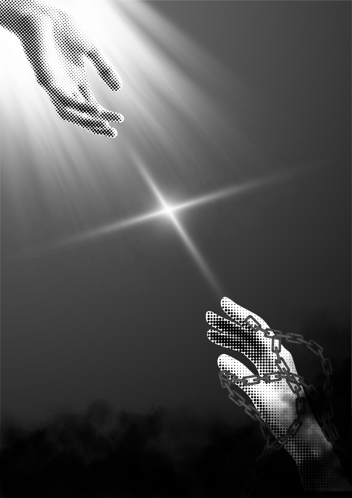

BARUPoster Abstrak Emosi Manusia - Harapan dan Keputusasaan
Proyek terbaru saya: Poster abstrak bertema emosi manusia.
Proyek ini merupakan salah satu karya yang saya buat dalam mata pelajaran DGDUX (Desain Grafis Dasar dan UX Design for Application Development). Dalam proyek ini, saya diberikan sebuah tema untuk membuat poster yang merepresentasikan emosi manusia dalam bentuk abstrak. Tema tersebut memberikan kebebasan bagi saya untuk mengeksplorasi berbagai macam perasaan manusia dan menerjemahkannya ke dalam sebuah karya visual. Dari sekian banyak emosi yang dapat diangkat, saya memilih harapan dan keputusasaan sebagai konsep utama karena keduanya merupakan dua perasaan yang sangat berhubungan dan sering kali hadir secara bersamaan dalam kehidupan manusia.
Pengembangan ide poster ini dimulai dengan memikirkan bagaimana cara menggambarkan sesuatu yang sebenarnya tidak memiliki bentuk fisik, seperti emosi, ke dalam sebuah media visual. Harapan dan keputusasaan merupakan dua emosi yang cukup bertolak belakang, tetapi memiliki hubungan yang menarik. Harapan sering kali menjadi alasan seseorang untuk terus melangkah, sedangkan keputusasaan dapat muncul ketika seseorang merasa bahwa segala usaha yang telah dilakukan tidak membuahkan hasil. Saya ingin mengangkat hubungan tersebut sebagai dasar pengembangan konsep poster ini, sehingga karya yang dihasilkan tidak sekadar menjadi sebuah gambar, tetapi juga memiliki cerita dan makna tersendiri.
Dalam proses pembuatannya, saya mencoba menerjemahkan kedua emosi tersebut melalui pendekatan desain abstrak. Pendekatan ini memungkinkan saya untuk tidak terpaku pada penggambaran objek yang realistis atau memiliki arti secara langsung. Sebaliknya, saya dapat menggunakan komposisi, bentuk, elemen visual, dan hubungan antarelemen untuk membangun suasana tertentu. Hal ini menjadi salah satu tantangan dalam pengerjaan proyek karena saya harus memastikan bahwa elemen-elemen yang digunakan tetap memiliki keterkaitan dengan konsep utama, meskipun tidak selalu menggambarkan harapan maupun keputusasaan secara literal.
Makna harapan yang ingin saya sampaikan melalui poster ini berkaitan dengan keinginan manusia untuk terus percaya bahwa masih ada kemungkinan untuk mendapatkan sesuatu yang lebih baik. Harapan dapat muncul bahkan dalam keadaan yang sulit sekalipun. Terkadang, seseorang hanya membutuhkan satu alasan kecil untuk tetap bertahan dan melanjutkan perjalanan hidupnya. Bagi saya, harapan bukan berarti seseorang selalu berada dalam keadaan bahagia atau memiliki keyakinan penuh terhadap masa depan, melainkan kemampuan untuk tetap melihat adanya kemungkinan di tengah berbagai ketidakpastian yang dihadapi.
Di sisi lain, keputusasaan menggambarkan keadaan ketika seseorang mulai kehilangan keyakinan, semangat,atau arah dalam menjalani kehidupannya. Perasaan ini dapat muncul akibat kegagalan, tekanan, kehilangan, maupun berbagai pengalaman buruk lainnya. Namun, saya tidak ingin menggambarkan keputusasaan sebagai sesuatu yang sepenuhnya berlawanan dengan harapan. Menurut saya, kedua emosi tersebut justru saling melengkapi. Seseorang tidak akan selalu merasa penuh harapan, begitu pula sebaliknya. Ada kalanya manusia merasa sangat yakin terhadap sesuatu, tetapi pada waktu lain justru merasa ingin menyerah. Perubahan dan pertentangan perasaan inilah yang membuat emosi manusia menjadi sesuatu yang kompleks dan menarik untuk dieksplorasi.
Melalui proyek ini, saya juga mendapatkan kesempatan untuk memahami bahwa desain grafis tidak selalu harus berfungsi sebagai media penyampaian informasi secara langsung. Sebuah karya visual juga dapat menjadi media untuk menyampaikan perasaan, pemikiran, pengalaman, serta sudut pandang pembuatnya. Saya belajar bahwa dalam merancang sebuah poster, pemilihan elemen visual harus memiliki tujuan dan tidak hanya digunakan sebagai hiasan. Setiap keputusan desain dapat memengaruhi bagaimana orang lain melihat, merasakan, dan menginterpretasikan suatu karya. Selain itu, proyek ini membantu saya mengembangkan kreativitas, kemampuan menerjemahkan ide abstrak, serta pemahaman mengenai hubungan antara konsep dan visualisasi.
Secara keseluruhan, proyek ini memberikan pengalaman baru bagi saya dalam mengembangkan sebuah ide menjadi karya visual. Saya menyadari bahwa proses pembuatan poster tidak hanya membutuhkan kreativitas, tetapi juga pemikiran dan pertimbangan dalam memilih setiap elemen desain. Selain menghasilkan sebuah karya, saya juga belajar untuk lebih memperhatikan bagaimana sebuah pesan dapat disampaikan melalui bentuk, warna, dan komposisi. Saya berharap poster ini dapat memberikan gambaran mengenai bagaimana harapan dan keputusasaan dapat hadir secara bersamaan dalam kehidupan manusia. Pengalaman ini juga menjadi motivasi bagi saya untuk terus mengembangkan kemampuan desain grafis dan mencoba pendekatan visual yang lebih kreatif pada proyek berikutnya.